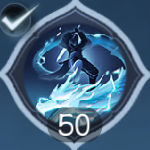
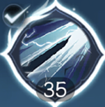

| Hình ảnh | Tên | Phái | Chi Tiết | Mô Tả |
|---|---|---|---|---|
| Kiếm Cốt Lăng 剑骨凌 |
Long Ngâm | • Mỗi điểm Căn Cốt tăng 2 điểm phá phòng. | • Thuộc tính Căn Cốt của Long Ngâm sẽ tăng thêm khả năng phá phòng (mỗi điểm Căn Cốt tăng 2 điểm phá phòng). • Khi cấp kỹ năng của hệ phái Long Ngâm tăng, cấp độ của đặc chất này cũng sẽ tăng, hiệu quả sẽ mạnh hơn. Đặc chất này không có hiệu lực trong chế độ công bằng. |
|
| Long Tuyền Minh 龙泉鸣 |
Long Ngâm | • Bỏ qua phòng ngự/khí thuẫn của mục tiêu: 8% • Thời gian duy trì: 7 giây• Thời gian hồi chiêu: 15 giây. |
• Khi Long Ngâm thi triển "Cầu Bại" hoặc "Tà", "Phá Không", "Kiếm Ý Lôi Long" kích hoạt cộng hưởng của 3 khí kiếm trở lên, trong 7 giây, đòn tấn công sẽ bỏ qua 8% phòng ngự và khí thuẫn của mục tiêu. Thời gian hồi chiêu: 15 giây. | |
 |
Kiếm Tâm 剑心 |
Long Ngâm | • Tăng tấn công: 430 điểm. • Tăng tấn công: 3% |
• Tăng thêm: 430 điểm tấn công. Tăng 3% thuộc tính tấn công hiện có. • Khi cấp độ kỹ năng của phái Long Ngâm tăng lên, cấp độ của đặc tính này cũng sẽ tăng, hiệu ứng sẽ mạnh hơn. (Hiệu ứng phần trăm tối đa tăng lên tới 38%). |
|  | Kiếm Ý Truy Kích 剑意追击 |
Long Ngâm | • Sát thương Thanh Long Nộ Xuyên Lôi: 14,065 nội công hệ Lôi thương. • Sát thương thêm lên quái vật: 67%.• Tăng tốc độ hồi phục Kiếm Ý: 25 điểm/5 giây. |
• Có thể thêm chiêu thức kỹ năng phụ trợ. Nhấn nút truy kích để kích hoạt một số kỹ năng trong một khoảng thời gian nhất định và khởi động Kiếm Ý Truy Kích đặc biệt. • Kiếm Ý: Sử dụng Kiếm Ý Truy Kích tiêu hao 30 điểm Kiếm Ý.• Kiếm Tâm: Trong trận chiến, khi sử dụng Kiếm Ý Truy Kích, nhận được 1 điểm Kiếm Tâm (một số kỹ năng phải trúng đích mới có thể nhận được). • Khí Kiếm: Một số kỹ năng có thể cắm xuống Khí Kiếm. Khi kích hoạt cộng hưởng Khí Kiếm, tốc độ hồi phục Kiếm Ý tăng lên và nhận được 1 điểm Kiếm Tâm.• Thanh Long Bạo: Khi tiếp xúc với Khí Kiếm của bản thân, gọi Thiên Lôi gây sát thương. Thiên Lôi gây thêm sát thương lên quái vật. |
|  | Nhất Mộng Thiên Nhất 一梦千一 |
Toái Mộng | • Sát thương 42,110 Ngoại Công Kim Thương. • Sát thương bổ sung 20% cho kỹ năng Mới Diệt. • Tăng 100% khả năng bỏ qua kháng nguyên tố.• Tăng 4% Tấn công Ngoại công. • Thời gian duy trì Bạch Nhận Mộng Cực là 12 giây. |
• Cơ chế Toái Mộng: Khi nhanh chóng liên tiếp sử dụng kỹ năng Toái Ảnh, sẽ tạo thành chuỗi liên kích. Sau 4 lần sử dụng kỹ năng liên tiếp, sẽ đạt được Nhất Mộng Thiên Nhất cùng lúc tăng cường tấn công Ngoại công cho nhân vật. • Nhất Mộng Thiên Nhất: Kích hoạt một lần Bạt Đao Tích nhanh chóng, gây sát thương cho kẻ thù xung quanh.• Tân Diệt: Kỹ năng bạo phát gây thêm sát thương cho mục tiêu có lượng máu dưới 30%. • Bản thân nhân vật sẽ nhận hiệu ứng Tăng khả năng bỏ qua kháng nguyên tố, có hiệu lực đối với cả người chơi và quái vật.• Khi cấp độ kỹ năng môn phái Toái Ảnh tăng lên, cấp độ của đặc tính này cũng sẽ tăng theo, khiến hiệu quả mạnh mẽ hơn. |
| Cực Ý 极意 |
Toái Mộng | • Tăng trưởng cực ý: 2 điểm/giây (tối đa 100 điểm). • Tiêu hao cực ý trong trạng thái cực ý: 10 điểm/giây.• Linh lực Giảm sát thương 15.0%. • Cực ý hồi phục khi sử dụng Ngàn Một: 5 điểm/mỗi lần |
• Tích huyền: Mỗi giây, Toái Mộng tích lũy Cực Ý. khi đầy, tấn công kẻ địch sẽ kích hoạt hiệu ứng Cực Ý, tăng cường khả năng của bản thân, trong khi đó Cực Ý sẽ nhanh chóng tiêu hao, khi Cực Ý về 0, hiệu ứng sẽ biến mất. • Linh lực: Trong trạng thái Cực Ý, bản thân nhận được giảm sát thương.• Mộng bản: Trong trạng thái Cực Ý, mỗi khi Toái Mộng thực hiện 千一 (Ngàn Một), sẽ hồi phục một lượng Cực Ý nhỏ. • Khi cấp độ kỹ năng môn phái Toái Mộng được nâng cao, cấp độ thuộc tính này sẽ tăng và hiệu quả sẽ mạnh hơn. |
|
| Cô Hồng Ảnh 孤鸿影 |
Toái Mộng | • Mỗi điểm thân pháp tăng 0.6 Hội Tâm. • Mỗi điểm thân pháp tăng 0.33 tỷ lệ chặn đòn. |
• Thuộc tính thân pháp của Toái Mộng sẽ tăng thêm tỷ lệ chí mạng và đỡ đòn. • Mỗi điểm thân pháp tăng sẽ tăng 0.6 tỷ lệ chí mạng và 0.33 tỷ lệ đỡ đòn. Thuộc tính này không có hiệu lực trong chế độ công bằng.• Khi cấp độ kỹ năng môn phái Toái Mộng được nâng cao, cấp độ của thuộc tính này cũng sẽ được nâng cao và hiệu quả trở nên mạnh mẽ hơn. |
|
| Phản Kích Cuồng Bạo 反击风暴 |
Thiết Y | • Tỷ Lệ Phản Sát Thương: 100%. • Mỗi điểm Nại Lực tăng 26,7 Khí Huyết. |
• Khi bị tấn công, có xác suất kích hoạt Phản Kích Cuồng Bạo, lấy giá trị tấn công và phòng ngự cao nhất của bản thân làm cơ sở, phản hồi 100% sát thương. • Mỗi điểm Nại Lực sẽ tăng thêm 26 Giới Hạn Khí Huyết. (không có hiệu lực trong chế độ công bằng.) |
×